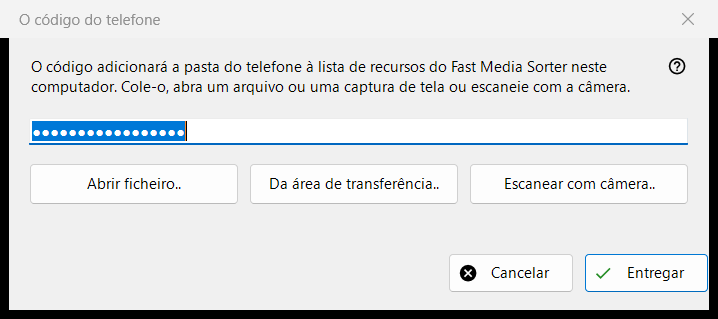
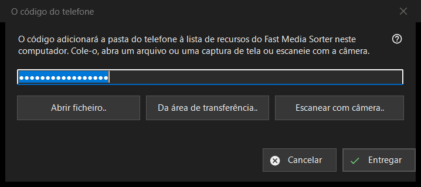

O código do telefone
Finalidade
Recebe um código de conexão gerado pelo aplicativo do telefone e o entrega ao Fast Media Sorter, que adiciona a pasta do telefone à sua lista de recursos neste computador. Ela se abre a partir do botão «Código do telefone..» da janela principal do Share Manager.


Nesta ordem
- Leve o código para a janela de uma de quatro maneiras: digite-o ou cole-o na caixa, clique em «Abrir arquivo..», clique em «Da área de transferência..» ou clique em «Escanear com câmera..».
- Clique em «Entregar».
- Confirme a adição da pasta na janela do Fast Media Sorter que aparece.
Os elementos
Código de conexão
Uma caixa de uma só linha que mostra pontos em vez de caracteres, porque o código é um segredo; nunca é escrito em um registro. Se você clicar em «Entregar» com a caixa vazia, é pedido que você digite o código, o cole ou abra um arquivo ou uma captura de tela.
Arquivo, área de transferência e câmera
«Abrir arquivo..» lê arquivos .fmscfg, .json e .txt e imagens QR (.png, .jpg, .jpeg, .bmp, .webp); um arquivo também pode ser arrastado para a janela. «Da área de transferência..» lê o código da área de transferência. «Escanear com câmera..» abre a janela da câmera, e o texto escaneado é tratado como se tivesse sido colado.
Entregar
O código é verificado e depois enviado ao Fast Media Sorter em execução, cuja própria caixa de importação continua fazendo as suas perguntas habituais. Em caso de sucesso, o estado diz «O código foi entregue: confirme a adição na janela do Fast Media Sorter.» e esta janela se fecha. Se o Fast Media Sorter não for encontrado, for uma versão mais antiga ou não responder, o código é colocado na área de transferência com marcadores de privacidade e a linha de estado indica que você o cole através de «Importar da área de transferência» no painel de recursos.
Mensagens na linha de estado
Um documento que não seja um código de conexão nem um arquivo de configurações de recursos é indicado como ilegível. Um arquivo criado por uma versão mais recente pede que você atualize o Fast Media Sorter. Se outro programa estiver usando a área de transferência, o estado diz isso.
Configurações do gerenciador · Configurações de compartilhamento SFTP · Configurações do servidor de troca